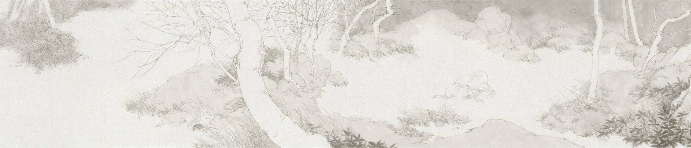
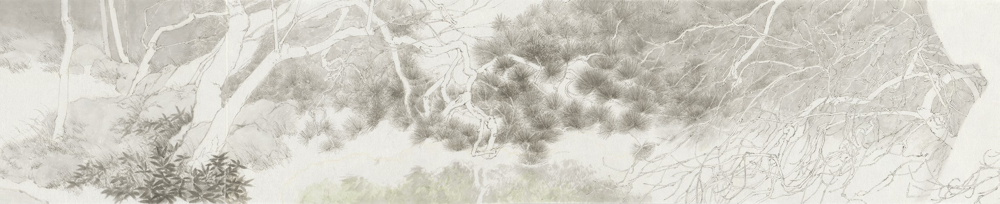
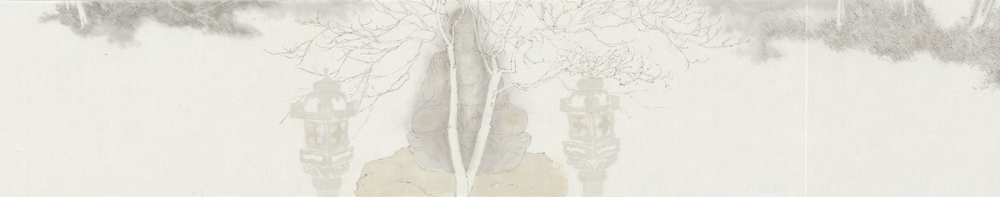

走京都 Wandering Kyoto
濃縮在京都期間由友人帶領的遊歷，全卷起頭為京都車站附近步行至鴨川、即將拆除的破敗街區，只要從巷口往車站望去、立刻就能看見市區那閃爍著霓虹的京都塔。 接著途經河邊整片的楊柳、又穿越二條城內尚未開花的枝垂櫻木、靜謐的無鄰菴等地。
〈走京都〉使用的卷紙上下幅寬狹窄，幾乎像是瞇著眼睛在看景，我在中段的轉景試著放入這樣極靠近的、幾乎貼在眼前的物件， 比如與我並肩走了許久的日本友人、佈滿視線的垂櫻枝條等，再從這樣嘈雜的狀態轉至無鄰菴裡映著松葉的清澈流水，隨著水面的留白、全景最後在比叡山上的釋迦牟尼佛收尾。
半睜著眼地以卷紙反覆重遊於此，從穢土至聖地，在一紙繪卷內似乎不過幾步之遙。
"Wandering Kyoto" condenses the journeys I took with friends during my time in Kyoto. The scroll begins with a walk from the area around Kyoto Station toward the Kamo River, passing through a run-down neighborhood soon to be demolished. From the mouth of an alley, a glance toward the station immediately reveals Kyoto Tower, its neon lights flickering over the city.
The journey then passes through a riverside stretch of willow trees, the not-yet-blooming weeping cherry trees within Nijō Castle, and the quiet gardens of Murin-an, among other places.
For "Wandering Kyoto", I used scroll paper with a narrow vertical format, almost as though the landscape were being viewed through half-closed eyes. In the transitions between scenes at the center of the scroll, I tried to introduce objects that come extremely close, almost pressed against the eyes: a Japanese friend who walked beside me for a long while, branches of weeping cherry trees filling the entire field of vision, and so on. From this noisy, crowded state, the scene then shifts toward the clear water at Murin-an, reflecting the pine needles above. Following the blank space of the water's surface, the panorama finally comes to an end with Śākyamuni Buddha on Mount Hiei.
With my eyes half-open, I revisit this place again and again through the scroll. From the defiled land to the sacred realm, the distance between the two seems to be no more than a few steps within a single handscroll.
京都で地元の友人に案内されながら歩いた遊歴を凝縮した絵巻である。
巻き首は京都駅から鴨川へと歩き、やがて取り壊される予定の荒れ果てた街に至る。路地から駅の方を振り返ると、京都タワーのネオンが見えてきた。そこから川辺に連なる柳を抜け、二条城にある、まだ咲いていない枝垂れ桜の間を通り、静かな無鄰菴へと辿り着く。
〈走京都〉では、幅の狭い巻き紙を使い、まるで目を細めて景色を覗き見るような感覚を描き出している。場面転換では、視線に迫ってくるようなモティーフを使い、肩を並べて歩いた友人や、視線を埋め尽くす枝垂れ桜の枝などを画面に配した。画面が騒がしい空気から無鄰菴の松葉を映した澄んだ池へと切り替え、水面の余白に沿い、最後は比叡山に佇む釈迦牟尼仏の姿で締める。
目を細めながら巻を繰り返し辿ると、穢土から聖地までの距離は、この一巻のなかでわずか数歩にすぎないだろう。


